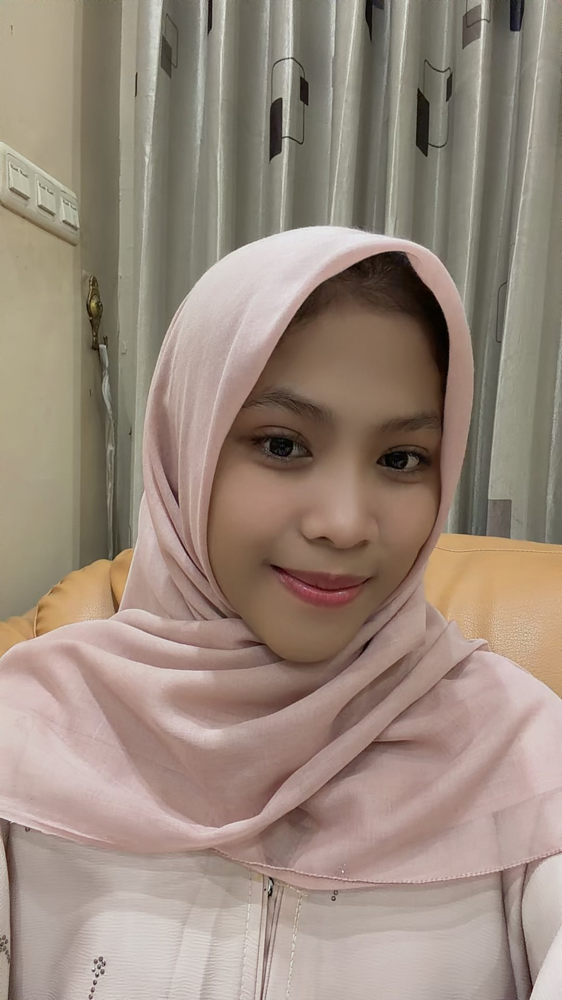

| Nama | Fitria Sari |
| Sekolah | SMKS Yannas Husada Bangkalan |
| Kelas | XB |
| Hobi | Berenang |
| Cita-cita | Menjadi orang yang sukses dan bermanfaat |
| Motto Hidup | "Jangan pernah menyerah sebelum mencoba." |
| Tentang Saya | Halo, nama saya Fitria Sari. Saya adalah siswi kelas XB di SMKS Yannas Husada Bangkalan. Saya memiliki hobi berenang karena dapat membuat tubuh sehat dan pikiran menjadi segar. Saya senang belajar hal-hal baru dan selalu berusaha menjadi pribadi yang lebih baik setiap hari. |